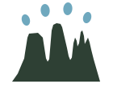

Every walk you log builds the story of where you and your dog have been.
No walks logged yet
Log your dog's next outing to start the story.
Log in to keep a walking journal.
Journal entries are stored in this browser for your account.